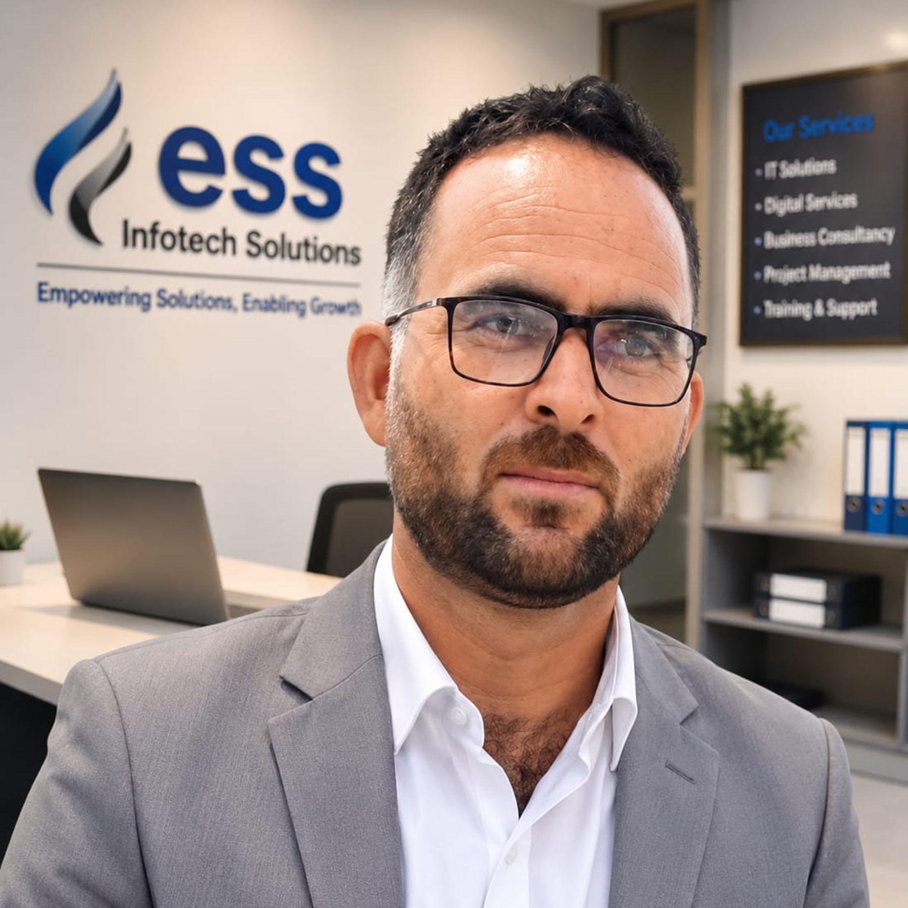

Sajad Hussain Bhat is a Technical Support & System Analyst with expertise in Information and Communication Technology (ICT), digital systems, technical support, system analysis, and technology integration. He possesses extensive practical experience in supporting startups, entrepreneurs, business organizations, and government initiatives by implementing reliable digital solutions that improve operational efficiency, productivity, and sustainable growth.
Provides technical support for startups, entrepreneurs, and business development initiatives through effective implementation of digital technologies and ICT-based solutions. Possesses expertise in system analysis, technology integration, infrastructure planning, and technical troubleshooting. Played a key role in the successful implementation of Polyhouse Technology projects and protected cultivation initiatives by providing technical coordination and operational support. Experienced in optimizing business processes through innovative technology solutions that improve efficiency, reliability, and long-term sustainability.
Mobile: +91 8082777077
Email: your-cscmse3@gmail.com